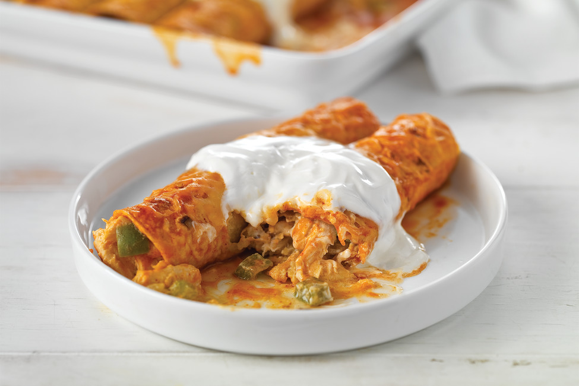

<!DOCTYPE html>
<html lang="en">
  <head>
    <link rel="stylesheet" href="../css/normalize.css">
    <link rel="stylesheet" href="../css/enchiladas.css">
    <link rel="stylesheet" href="../css/recipes.css">
    <link rel="stylesheet" href="https://fonts.googleapis.com/css2?family=Material+Symbols+Outlined">
    <meta charset="UTF-8">
    <meta name="viewport" content="width=device-width, initial-scale=1.0"> 
    <title>Enchiladas Recipe</title>
  </head>
  <body>
    
    <!-- <h1>Enchiladas</h1>
    
    <h2>Chicken Enchiladas</h2>
    <p>Discover chicken enchiladas, a recipe that features cream cheese, lots of delicious herbs and spices and saucy chicken. </p>
    <p>This recipe yields 6 servings.</p>

    <h3>Ingredients</h3>
    <ul>
      <li>1 tub (8 oz.) PHILADELPHIA Cream Cheese, divided</li>
      <li>3 Tbsp. milk, divided</li>
      <li>1 tsp. garlic powder</li>
      <li>2 tsp. oil</li>
      <li>1 cup each chopped green peppers and onions</li>
      <li>2 cloves garlic, minced</li>
      <li>2 &frac12; cups chopped cooked chicken</li>
      <li>1 &frac12; cups KRAFT Mexican Style Finely Shredded Four Cheese, divided</li>
      <li>2 cans (10 oz. each) red enchilada sauce, divided</li>
      <li>12 corn tortillas (6 in.), warmed</li>
    </ul>

    <h3>Steps</h3>
    <ol>
      <li>Heat oven to 350 &deg;F.</li>
      <li>Mix cream cheese spread, 2 Tbsp. milk and garlic powder until blended.</li>
      <li>Heat oil in large skillet on medium heat. Add peppers, onions and garlic; cook and stir 5 to 6 min., or until crisp-tender. Stir in chicken, &frac34; cup each cream cheese mixture and shredded cheese, and &frac14; cup enchilada sauce.</li>
      <li>Dip 1 tortilla in remaining enchilada sauce; gently shake off excess sauce. Spoon &frac14; cup chicken mixture down center of tortilla; roll up. Place, seam side down, in 13-by-9-in. baking dish sprayed with cooking spray. Repeat with remaining tortillas and filling; cover with remaining sauce.</li>
      <li>Bake 20 min. Top with remaining shredded cheese; bake 5 min. Mix remaining cream cheese mixture and remaining milk; spoon over enchiladas.</li>
    </ol>

    <a href="../index.html">Return to Odin Recipes</a> -->
  </body>
</html>